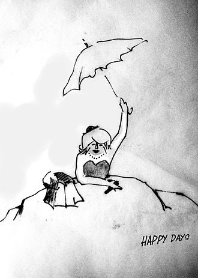

Cuando me transformé en niño, pensé que la vida iba a ser un paseo triunfal, pero no fue nada fácil tener que crecer, primero, en una Italia en guerra y, más adelante, en América. En más de una ocasión, llegué a pensar que mejor me hubiesen ido las cosas de haber continuado siendo una marioneta. Ahora que todo se ha acabado, sé que me equivocaba. A pesar de los pesares, no volvería a ser aquel Pinocho inocente del pasado, que apenas distinguía una verdad de una mentira.
Tras la muerte de mi viejo, me quedé huérfano. Ni mi hada madrina ni el bueno del grillo estaban ya a mi lado para sacarme las castañas del fuego. Supongo que pensaron que, siendo yo ahora un niño, su trabajo dejaba de tener sentido, y que ya les tocaba relajarse un poco, lo cual no dejaba de ser cierto. Aunque, si algún día Disney hace una segunda parte de la historia, seguro que los incluyen, lo cual no es de extrañar en gente que, a expensas de la veracidad, se toma todas las libertades del mundo.
Cuando las tropas americanas tomaron Palermo, apenas se podía hacer nada aparte de robar bicicletas. Lo lógico es que por esas fechas yo ya hubiese aprendido a mantenerme alejado de toda suerte de trapicheos. Y así era, pero los niños tienen que comer. No sé si os acordaréis de aquel astuto Zorro y de aquel malhadado Gato que repetía cuanto decía el Zorro. No estaban en demasiada buena forma después de que me transformara en niño, pero se fueron recuperando al entrar de lleno en el mercado negro, que no dejaba de ser su hábitat natural.Así que me metieron en el negocio del robo de bicicletas, que seguramente no habría abandonado de no haber sido adoptado por un soldado americano. Era un tipo majo, con un gran corazón, aunque un poquitín bobo. Sucedió que un día dejó su flamante bici americana en la calle, frente a un bar. No se olvidó, como es de suponer de candarla, pero ¿qué candados podían resistírseme entonces? En un santiamén me deshice del candado y ya me iba, cuando fui a darme de bruces con un PM que, no teniendo mejores ocupaciones, recién salía del prostíbulo de al lado. Me agarró del cuello y me preguntó de dónde había sacado la bici (sabía que la había robado porque ningún chico italiano tenía una bici como esa), a lo cual le contesté que me la había prestado un amigo. Lo dije en italiano y, al no entenderme, hizo sonar su silbato hasta que vino un policía italiano y me hizo, ahora en italiano, la misma pregunta, obteniendo igual respuesta.
¿Qué amigo?», me preguntó. Señalé en dirección al bar, hacia donde me arrastraron, bici incluída, y me pidieron que les indicara quién era mi amigo. Me puse a pensar en lo difícil que iba a ser salir de aquel atolladero. Incluso si tenía la suerte de dar con el propietario de la bici entre los cerca de veinte soldados que había en el bar, ¿qué me diría? Justo entonces se giró un tipo y nos vio.
—¡Eh, tú! ¿Qué haces con mi bici? —gritó, acercándose a nosotros.
–Pesqué al chaval tratando de robarla —dijo el PM—. Al no saber italiano, no se había enterado de la coartada del amigo.
—Dice que sois amigos —dijo en italiano el policía, y pareció que el tipo algo entendía—. Y que le has dejado la bici. Estos chavales siempre mienten.
El soldado me miró y me vio llorar, cabizbajo, y vio también cómo me restregaba la suciedad de la cara con la manga de la camisa. Entonces, dijo:
—Así es. Somos amigos.
—Imbécil —murmuró en italiano el policía, saliendo enfurecido del lugar. El PM, por su parte, se encogió de hombros y se largó.
—¿Por qué me has robado la bici? —me preguntó el soldado—. Lloriqueé un ratito, lo cual me resultaba fácil, pues lo había aprendido a hacer siendo marioneta, al tiempo que meditaba una respuesta.
—Tengo hambre —dije, al fin—, y con una bici podría encontrar trabajo entregando todo tipo de cosas y así ganaría algo de dinero para comer.
Algo así debí soltar. No obstante, nada dije de las diez bicis que solía robar a diario, la mayoría chatarra, que suministraba al Zorro y al Gato a cambio de comida y cigarrillos y, a veces, hasta de algún dinero. El soldado sacudió con tristeza la cabeza, me llevó a la barra y pidió una Coca Cola y una hamburguesa para mí. La engullí como si llevara un mes sin probar bocado, aunque lo cierto es que hacía poco que había desayunado y apenas tenía hambre. Me preguntó dónde vivía y yo le contesté que en la calle, lo cual era bastante cierto, dado que yo no tenía ninguna residencia permanente. Yendo al grano, lo que sucedió fue que aquel soldado me colocó en una familia del ejército hasta que estuvo listo para volver a los Estados Unidos.Entonces decidió adoptarme y me llevó con él. Era un benefactor de los de verdad. Decía que no podía ayudar a todos los niños pobres de Sicilia, pero sí a uno, y ese fui yo.
Fuimos a vivir a su pueblo natal, un lugar de mala muerte en Nebraska; allí se casó con una maestra de escuela que había sido el amor de su niñez y se asentó en la empresa de seguros de su padre. Yo vivía en una bonita casa, comía de todo, vestía buena ropa y hasta tenía una bici nueva. Todo parecía haberse arreglado para siempre. Sin embargo, había un gran inconveniente: el 99% del pueblo eran unos asquerosos WASPS.
Mis problemas empezaron en la escuela. El primer día de clase la maestra me preguntó cómo me llamaba. Yo sabía bastante inglés, por cierto. Cualquier ladrón que se precie en Palermo tiene que saber inglés. Me levanté y respondí: «Pinocho». Durante unos instantes se hizo un silencio en la clase, hasta que el listillo de turno dijo:
¡Claro que es Pinocho. Fijaos qué nariz!» Mi nariz es un poco más grande que la típica nariz Wasp, pero en Italia nunca había tenido de qué avergonzarme. Alguién se empezó a reír y en un instante toda la clase se reía desbocada. Había hasta niños que se revolcaban por los suelos, sujetándose la barriga. Al principio la maestra trató de poner orden, pero lo cierto es que ella también acabó siendo víctima del virus de la risa, como el resto de la clase.Yo me sentía terriblemente humillado. Cuando la profesora logró controlarse, se disculpó entre alguna que otra risita de la clase y me preguntó cuál era mi apellido.
— Baccigaluppo — contesté, pues era el apellido de Gepetto.
— ¡Pinocho Baccigaluppo! —berreó un niña.
—¡No,es...Poppins! —rectifiqué, echando mano del apellido de mi nuevo padre.
—¡Pinocho Poppins! —gritó, de nuevo, la muy zorra y se volvió a liar. Al poco, la clase entera se revolcaba por los suelos y hasta me pareció que, de tanto reír, la maestra no tardaría mucho en desplomarse.
No es de extrañar que no me gustara mucho la escuela. Mi primer obstáculo fue el nombre, aunque tampoco sabía jugar a béisbol, baloncesto o fútbol americano, que entre aquellos niños eran prácticamente las únicas actividades y conversaciones posibles. Algo que sabía hacer mejor que ellos era pelear duro y, al día siguiente del cachondeo general, acabé por demostrárselo a un par de los más grandes. Después de aquello, ya me dejaron más tranquilo. Demasiado tranquilo, la verdad sea dicha. Por otra parte, había una chica que me gustaba. Me dijo que tenía que cambiarme el nombre. Le contesté que lo haría, pero no en Nebraska; no quería darles la satisfacción de saber que me avergonzaba de mi nombre.
Al acabar la secundaria, mi padre quería que fuera a la Universidad de Nebraska, la única que podía pagarme. Le dije que no, que me iba a Nueva York para ser actor. En Italia había trabajado en un espectáculo de marionetas y me había picado el gusanillo del teatro. Además, no me faltaba talento. No había olvidado aquella experiencia como actor, aunque el titiritero aquel era un sádico que pretendía utilizarme como leña para el fuego. Sospecho que a mi padre americano más bien le alegró poder librarse de mí. Me dio mil pavos, un reloj nuevo y así fue como emprendí mi camino.
Si yo hubiera ido a una escuela de interpretación tal como pretendía al principio, los mil dólares me hubieran durado unos tres meses, así que me lancé en busca de trabajo de teatro en teatro. Si alguna vez lo habéis intentado, ya sabréis lo frustrante que resulta. No me había sentido tan hundido desde que me transformara en burro. Pero al menos entonces trabajaba. Ahora en cambio, deambulaba sin blanca por el Lower East Side, donde residía, cuando vi el siguiente cartel: «Café teatro». Debía haber pasado por allí muchísimas veces, pero no había reparado en él. La verdad es que nunca hubiera pensado dar con un teatro en aquel barrio. Tan apartado estaba del Off Broadway que, como te despistaras, podías acabar en las aguas del East River. La obra que había en cartel era El Zoo de Cristal. Debían ser ya cerca de las ocho, y no me quedaba por empeñar ni el reloj que mi padre me diera como regalo de despedida. Como no podía pagarme la entrada, me puse a cavilar cuál sería el mejor modo de colarme, y en eso que sale del teatro un tipo malhumorado, farfullando que en su vida había visto nada tan repugnante. Se deshizo de su entrada rota, lanzándola a sus espaldas, y yo corrí a recogerla antes que se la llevara el viento. Si alguien me pedía explicaciones, pensé, le diría que había salido a hacer un pis. El teatro estaba en un viejo almacén y había que seguir unas flechas pegadas en las paredes para encontrar la sala. Sólo había unas treinta localidades embutidas en un espacio minúsculo, y estaba a reventar. De inmediato entendí por qué aquel hombre había salido tan indignado. Una mujer negra interpretaba el papel de Amanda, una envejecida madre sureña de piel blanca, mientras que el resto del reparto lo formaban actores blancos. Estuve a punto de soltar una carcajada, pero logré reprimirla. Miré a mi alrededor y vi que el público seguía la obra atentamente. Realmente, era un montaje muy bueno y a los cinco minutos te olvidabas de que la actriz no era blanca, lo cual dice mucho de su talento. En mi asiento encontré un programa donde se invitaba al público al bar, por si queríamos conocer a los actores; así que decidí esperar. La mayoría de la gente se fue y, al llegar los actores, solo quedábamos cinco espectadores. Los otros cuatro esperaban en la barra, pero yo no me moví de mi sitio porque no quería tomar nada. Según el programa, el nombre de la actriz era Judy _______, y era, además, la directora ejecutiva. Con el tiempo llegaría a ser famosa, así que omitiré su apellido porque la conoceríais.
Sin maquillaje estaba guapísima y parecía veinte años más joven. Entró sonriendo, pero antes de llegar a la barra, el actor que hacía de hijo, la agarró del brazo y le dijo:
—Dame diez pavos, Judy. ¡Venga mujer! ¡Que te habrás sacado unos cien esta noche!
—Oye —añadió el otro actor, el que interpretaba al pretendiente distinguido—, ¿qué pasa contigo?
Detrás de ellos, la 'hija' asentía como una mema. Lo más seguro es que en la obra se interpretara a sí misma.
—¿Y quién va a pagar el alquiler y los gastos y los derechos? ¿Vosostros? —profirió Judy.
—¿Qué alquiler? —gritó el hijo—. Llevas seis meses sin pagar el alquiler, y no has soltado ni cinco por los derechos.
Empezaron a pelearse a grito pelado, hasta que Judy zanjó la cuestión diciéndoles que si no estaban a gusto, ya se podían ir a tomar por culo. El 'hijo' dijo que se iba, pero no sin antes llevarse su equipo de audio, lo cual, naturalmente, hizo al instante. Judy les gritó algo irreproducible, se sentó en el suelo y rompió a llorar. Por entonces, una pareja de jóvenes había huído del bar tapándose las orejas, de modo que sólo quedábamos tres personas: un hombre alto, otro bajito y yo, que seguía allí, encajonado en mi asiento. Los dos tipos se acercaron a Judy, y uno de ellos, cogiéndola por debajo de las axilas, la incorporó.
—Venga, venga, mujer —dijo con acento italiano y voz meliflua—. Deje que la ayudemos.
—Deje que la ayudemos, mujer —repitió el bajito. No podía creer lo que veían mis ojos. Esos dos eran clavados al Zorro y al Gato. Pero, ¿qué estaban haciendo en Nueva York ?
—Es usted una actriz maravillosa. Ha hecho bien librándose de esos aficionadillos —sentenció el Zorro—. No esté triste.
—No esté triste.
—No estoy triste, gilipollas —dijo Judy—. Estoy furiosa.
—Tiene usted razones para estarlo.
— ... razones para estarlo.
—¿Qué voy a a hacer ahora? Llevábamos tres semanas de ensayos, estrenamos hoy con éxito y ahora estos cabrones me dejan aquí tirada.
—Permítame una sugerencia —intervino el Zorro mientras se ponía a sacudirle el polvo.
— ...una sugerencia.
—Oiga, sugiera usted lo que quiera, pero sin manosear —le espetó Judy. Y se fue a la barra a servirse una cerveza.
—Soy un director muy conocido en Roma. Este es mi año sabático, y he aprovechado para visitar Nueva York. Me llamo Remus.
— ¿Remus, qué más?
—Pues...Carolingus Remus. Y este es mi ayudante, Fidelius Feel. Estamos a su servicio.
—A su servicio.
—Le propongo hacer un monólogo femenino —explicó el Zorro, tras lo cual hizo una pausa, buscando un efecto sorpresa—, de modo que no tendrá que pagar a ningún actor. Solo me queda enviar un telegrama a Roma comunicando que retraso mi regreso. Yo mismo dirigiré.
—... dirigí...
—¿Qué monólogo es ese? —inquirió Judy, suspicaz e interesada a un tiempo.
—¿Qué me dices de Giorni Felici?
—¿Qué coño es eso ?
—Los días felices, de Samuel Beckett.
— ...Samuel Béquer.
—Hay dos personajes —objetó Judy.
—Cierto, pero cualquiera puede interpretar a Willie. Hasta el propio Feel.
—Estás de guasa —soltó Judy entre risas—. Ni muerta actuaría con este mequetrefe.
—Entiendo.Bueno, ya encontraremos soluciones. No es un problema insalvable.
Nadie se había percatado de mí, así que tosí.
—¿Y tu quién eres? —se interesó Judy.
—Un actor —contesté y me levanté poniendo de manifiesto que mi talla era muy superior a la del Gato.
—¡Un actor! —chilló el Zorro—. Justo lo que necesitamos.
Cómo te llamas, chico?
— ¿.…te llamas , chico ?
—Madera —repliqué, sin pensarlo dos veces—, Montgomery Madera.
Así que interpreté al Willie de Los dias felices a diez pavos por función y gratis en los ensayos. El Zorro dirigía y el Gato se encargaba de la iluminación. El Zorro exigía un cincuenta por ciento de la recaudación, un porcentaje escandaloso, pero Judy accedió a quedarse con el otro cincuenta por ciento de beneficios que, por otra parte, no esperaba que fuese demasiado. Que el Gato fuera el cajero tampoco me pareció buena idea. El Zorro, por su parte, no es que nos dirigiera mucho. Eso sí, cuando se pasaba por allí se sentaba frente a Judy, con pose de intelectual, apoyando una de sus piernas sobre una butaca. Solía decir: «Muy bien, querida. Fantástico.». Entonces, Judy le preguntaba: «¿Pero qué significa?». A lo que el Zorro respondía: «Es teatro del absurdo, querida. No significa nada.». El decorado que necesitábamos era mínimo: un montículo, cuya estructura fue montada por un carpintero aficionado. Esta iba recubierta por una lona con un agujero en medio, hecho a medida de la cabeza y los hombros de Winnie (Judy).
Judy tenía que memorizar un monólogo de dos horas y yo le eché una mano.Cuando llegué a conocerla mejor, le pregunté por qué interpretaba papeles de blancos. Me dijo que había estado en obras de Broadway e incluso en películas, y que siempre la cogían para hacer de criada negra, o de esclava o de nativa africana semidesnuda, así que decidió montarse su propio teatro e interpretar lo que le diera la gana.
Salvo los lunes, todas las noches me reclinaba, sentado, en la parte trasera del montículo y encarnaba a Willie. Mientras Judy declamaba su monólogo, yo tarareaba una melodía, me sonaba ruidosamente la nariz —bastantes veces— y de vez en cuando dejaba entrever la coronilla. En una ocasión mostraba subrepticiamente una postal guarra, de modo que solo pudieran verse la postal y la mano. Mi única gran escena no llegaba hasta el final, cuando me arrastraba por el montículo, vestido de novio, y con sombrero de copa. Lucía asimismo un bigote de morsa postizo. Me desplazaba hasta el proscenio, ante la mirada atenta del público, subía por el montículo hasta alcanzar la pistola de juguete que yacía en la cima, a poca distancia de la cabeza de Judy y caía rodando hasta abajo sin lograr asirla. Volvía a ponerme a cuatro patas y me quedaba mirando a Winnie, que canturreaba desafinando el Vals de la Viuda Alegre y, mientras caía el telón, me clavaba una mirada implacable.
Se supone que en el primer acto Winnie está enterrada en el montículo hasta la cintura, y en el segundo hasta el cuello. Judy se colocaba dentro del montículo, sobre un taburete alto y sacaba la cabeza por el agujero. Yo estaba justo debajo y detrás de ella. Esto tenía sus pros y sus contras. Por una parte, me permitía admirar sin reservas aquel precioso culo. Lo malo es que ella era propensa a padecer flatulencia cuando se ponía nerviosa, que era siempre que había función, así que yo me encontraba, casi permanentemente, envuelto en una nube de pedos. Solo conseguía unas condiciones de trabajo tolerables, cuando me las apañaba para abrir con los pies la lona del montículo, agitándola de vez en cuando con el fin de airear el ambiente.
Por mi parte, yo allí, sentado tras el montículo, no me limitaba a hurgarme la nariz, tal como especificaba la obra, esperando que llegara mi réplica al final de la obra, sino que también hacía de apuntador. Una vez Judy se saltó veinte páginas y, al cabo de otras diez, de golpe, se dio cuenta de que algo iba mal y me dio con el pie en el hombro. Le apunté la frase en que se había extraviado, y cuando ya había recorrido las veinte páginas, conseguí, hábilmente, que se saltara las diez páginas que ya había recitado. De allí hasta el final todo fue como una seda. El público no notó nada raro. Era lógico. Nada hubiera cambiado si se hubiese prescindido de aquellas veinte páginas, excepto que la obra se hubiese acabado demasiado pronto.
Judy es una gran actriz y su interpretación de aquel papel del teatro del absurdo era tan emotiva (su cara es muy expresiva), que el público quedaba invariablemente conmovido y siempre le tributaban un generoso aplauso. Cuando en la última bajada de telón, yo me unía a ella, el aplauso cobraba intensidad, como si mi papel requiriese una profunda maestría actoral. Yo veía que a Judy esto no le acababa de gustar, pero no podía decir nada: también yo tenía derecho a mis segundos de gloria, o por lo menos a que se reconociera mi existencia.
Judy sufría con frecuencia dolores de espalda por estar tanto tiempo rígidamente sentada en la misma postura y yo solía darle masajes. En uno de nuestros últimos ensayos, estábamos solos porque el Zorro y el Gato no podían trabajar, aquejados como estaban de un malestar de resaca. Extendí mi masaje hasta las nalgas, y acabé por acariciarle el interior de los muslos. Judy gemía apasionadamente, sin dejar de recitar el texto. Nunca había estado tan bien. Cuando, al final de la obra, yo descendí rodando del montículo, saltó del agujero y, tras deslizarse sobre la pendiente, aterrizó encima de mí. Hubo luchas, forcejeos, gritos, arañazos y ardientes besos, y al final hicimos el amor al pie del montículo. Debo añadir, en honor a la verdad, que mi verga es bastante especial, porque Gepeto solo utilizaba la mejor madera, la más dura: el quebracho, importado de Argentina. En cierta forma, esas moléculas se transfirieron a mi verga de carne y hueso.
Allí estaba yo, recostado sobre su espalda (el vestido negro se le arremolinaba por encima de la cintura), cuando Judy profirió: «Oh, Montgomery, ha sido increíble... Maravilloso... Pero esto no puede volver a suceder.».
—Pero Judy, yo he pensado que lo podríamos incluir en la obra. Ya me entiendes, cambiar el final.
—¡Ni hablar! El teatro es sagrado, es un templo, igual que la obra.
Yo sabía que aquellas ideas provenían del Zorro —los directores son personajes temibles—, así que me callé, aunque eso no significaba que estuviera de acuerdo.
Llevábamos ya doce funciones cuando pasó lo que tenía que pasar. Durante la mitad del segundo acto, me puse a acariciar la pierna derecha de Judy. Se desconcentró y trató de apartar la pierna, pero no había escapatoria posible. Con el pie que le quedaba libre, me propinó una patada en la cabeza. Sin ni siquiera consultar el texto —me lo sabía de memoria—, le apunté lo que tenía que decir. Entonces me metí por debajo del taburete y le acaricié el interior de los muslos, abriéndome camino hacia arriba hasta que mis dedos de oro se demoraron, dando un dulce e intenso masaje, en su pináculo del placer, como lo llamó Confucio. Durante unos minutos estuvo gimiendo el texto, hasta que, al fin, irguiendo la cabeza hacia el techo, gritó con indudable sinceridad: «¡No...puedo...seguir así!» y, a continuación, se tiró un pedo de tal calibre que llegué a temer que, a pesar del montículo de lona, el público lo habría oído. Pero me equivocaba. Más tarde, comprendí que debía haber parado antes de que ella alcanzara el orgasmo. Recuperé rápidamente mi posición habitual, zarandeé la lona y le susurré: «¡Sí, sí, debo... seguir!».
—¡Sí, sí, debo...seguir! —repitió Judy con emoción. Le apunté la frase siguiente y conseguí que retomara el hilo hasta el final. Era el climax dramático que le faltaba a la obra.
Hacia el final, después de caer rodando por el montículo, la estuve esperando a cuatro patas. Sabía que lo que íbamos a hacer era algo sin precedentes en la historia del teatro: concretamente lo que habíamos ensayado aquel fatídico día . Yo estaba a punto.
«¡Ven!», le di a entender, moviendo los labios. Judy entonó unas notas de La Viuda Alegre, que fueron interrumpidas por su propio llanto. Ella también lo sabía. Sacó el brazo derecho por encima del montículo y agarró la pistola. Sin prisas y a conciencia me apuntó con el arma, tras lo cual apretó el gatillo. Aquella réplica atronadora retumbó en el pequeño recinto y el público se sobresaltó como si la bala hubiese perforado su propio corazón. Sufrí una convulsión y, como un gato acorralado, arqueé la espalda y me desplomé. El Zorro que estaba repantingado en la última fila, se incorporó de un salto e hizo señas para que bajaran el telón. Mientras iba corriendo hacia los bastidores, el público, anonadado, rompió a aplaudir estrepitosamente.Judy salió catorce veces a escena, trece sola, y una con el Zorro. Si unos minutos antes no hubiera tenido un orgasmo, habría saltado de su agujero y habríamos hecho el amor como locos al pie del montículo, como en los ensayos. Entonces, yo habría estado allí con ellos, haciendo reverencias, y no camino del muelle, donde el Gato, intimidatoriamente, me había conducido.
Resultó que aquella noche había en el teatro un crítico de un destacado periódico. Estaría aburrido y debía haber visto ya todo lo que había en cartel. Su crítica fue ditirámbica. El nuevo final acrecentó la reputación del Zorro. Volvió a Sicilia, luego fue a Roma, y finalmente se embarcó en una brillante carrera, en compañía del Gato, convertido en su lacayo. Los herederos de Beckett demandaron al Café teatro y, naturalmente, ganaron la causa, pero eso solo contribuyó a aumentar por igual su fama y la afluencia de público, hasta el punto que Judy se instaló en un teatro más grande, en el Off-Broadway. Es casi seguro que cuando se popularicen las obras de Beckett la nueva versión acabará imponiéndose.
Os preguntaréis qué ocurrió conmigo, la marioneta que tantas esperanzas tenía cuando se transformó en niño. Vestido todavía de novio, con el esmoquin, el sombrero de copa, 'mi' bigote de morsa, con un agujero de bala justo en el lugar que en su día ocupara mi ojo izquierdo, ese que, ante el culo de Winnie, se desorbitaba, y con los pies enlosados en un bloque de cemento, descansaba en posición vertical en el fondo del Estrecho de Long Island, mientras mis cabellos ondulaban en el agua como espaguetis. Nuevamente, el Zorro y el Gato habían podido conmigo. En cierta forma —quizás gracias a la percepción extrasensorial, o más probablemente, escuchando a escondidas— sabían de antemano lo que iba a suceder. ¿Quién sino había cambiado aquel arma de juguete por una pistola de verdad y, además, cargada? Por encima del agua, desde una posición privilegiada contemplaba cómo se acercaba aquel gigantesco tiburón. (No sé si sabéis que después de morir vagamos en forma de espíritu durante tres días, razón por la cual duran tanto los velatorios.) No creo que fuera el mismo que en la Bahía de Nápoles se nos tragó a Gepeto y a mí, aunque, de hecho, los tiburones no dejan de ser una gran familia: una gran famiglia. Sin embargo, esta vez sí que fui digerible.
Una ventaja de ser niño en lugar de una inmortal marioneta literaria es que todavía ando por aquí arriba, esperando volver a nacer y esperando, también, poder ganarles algún día el último asalto a mis dos 'queridos' antagonistas. En cambio, una marioneta, cuando cae entre los escombros, no es más que Madera.